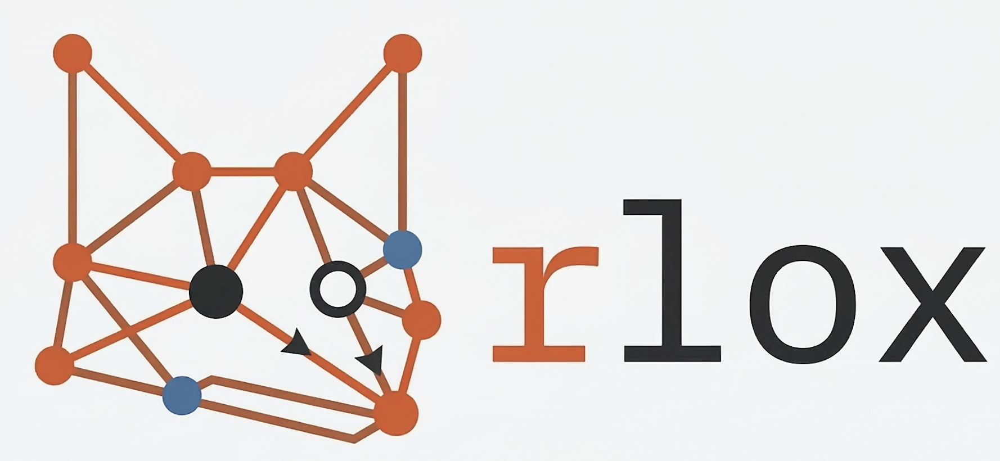

Rust-accelerated reinforcement learning.
3-50x faster than SB3. Zero-copy PyO3 bindings.
# Install
pip install rlox
# Train PPO on CartPole (3 lines)
from rlox.trainers import PPOTrainer
metrics = PPOTrainer(env="CartPole-v1").train(50_000)
print(f"Reward: {metrics['mean_reward']:.0f}")
# CLI (no Python needed)
python -m rlox train --algo ppo --env CartPole-v1 --timesteps 100000| vs SB3 | vs CleanRL | vs RLlib | vs TRL | |
|---|---|---|---|---|
| Speed | 3-50x faster data plane | 2x faster collection | Same (single-node) | 4-14x faster KL/GRPO |
| Scope | Same algorithms + offline RL | More algorithms | Lightweight, no Ray | Complementary |
| Unique | Rust VecEnv + Candle | Offline RL + LLM ops | Rust buffers + GAE | Rust sequence packing |
# From PyPI
pip install rlox
# From source (requires Rust toolchain)
git clone https://github.com/riserally/rlox.git
cd rlox && pip install -e ".[dev]"Installation, first training run, step-by-step tutorial.
Complete user guide with 3-level API reference.
Copy-paste code for every algorithm.
Auto-generated crate documentation.
Custom networks, exploration, offline RL, Candle hybrid.
Benchmarks, deep-dives, and release notes.